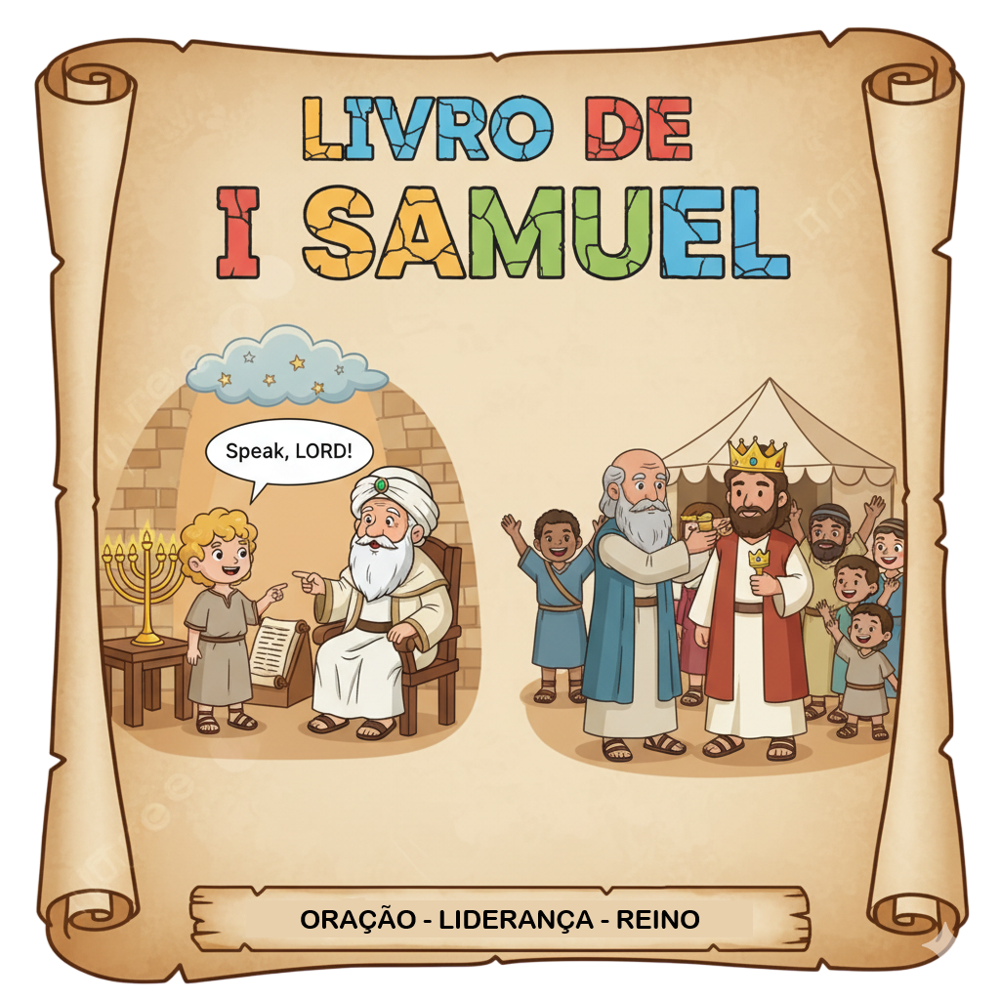
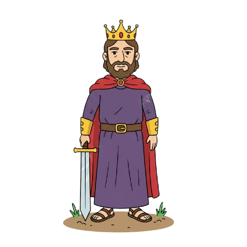
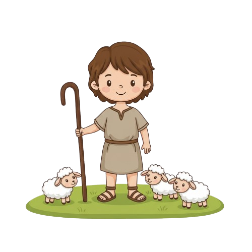
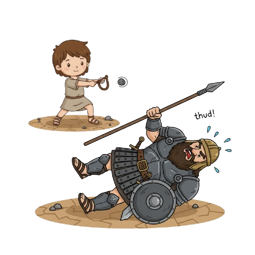

Profetas e Reis — Um Resumo Visual para Crianças
Samuel era uma criança dormindo no templo quando Deus o chamou pelo nome — três vezes! Ele não reconheceu a voz na primeira nem na segunda. Quando entendeu, respondeu com humildade e obediência.
Quando Samuel foi ungir o novo rei em Belém, olhou para os filhos mais altos e mais fortes de Jessé — mas Deus disse não a todos. O escolhido era o caçula, que estava no campo cuidando de ovelhas.
Golias tinha mais de 2,90 metros e desafiou Israel por 40 dias. Todo o exército tremeu — menos Davi. Ele não lutou com espada, mas com fé. Uma pedrinha de atiradeira e a batalha foi vencida!
"O homem olha as aparências, porém o Senhor olha o coração."
— 1 Samuel 16:7
Quando Samuel chegou à casa de Jessé para ungir o novo rei, ficou impressionado com os irmãos mais altos e fortes de Davi. Mas Deus o corrigiu: o que importa não é o que aparece por fora, mas o que está dentro!
Deus não se impressiona com altura, força ou beleza!
Ele procura um coração fiel, humilde e obediente.
Você não precisa ser o mais forte — precisa ser fiel!
Filho da oração de Ana, dedicado a Deus desde criança. Cresceu no templo com o sacerdote Eli. Foi o último juiz de Israel e o profeta que ungiu os dois primeiros reis: Saul e Davi.

O primeiro rei de Israel — alto, forte e impressionante. Começou humilde, mas o poder mudou seu coração. Quando desobedeceu a Deus, o reino lhe foi tirado. Uma lição sobre como o orgulho destrói o que a graça constrói.

O caçula dos filhos de Jessé — pastor de ovelhas, músico e poeta. Deus o escolheu pelo coração. Com fé e uma pedrinha, derrubou o gigante Golias. Tornou-se o rei mais amado de Israel e antepassado direto de Jesus.
Ana orou com lágrimas por um filho e prometeu dedicá-lo a Deus. Samuel nasceu e foi levado ao templo ainda pequeno. Lá, Deus o chamou três vezes de noite — e ele se tornou profeta respeitado em todo Israel.
O povo queria ser igual às outras nações e pediu um rei. Deus avisou que isso seria um erro, mas atendeu ao pedido. Saul foi ungido — alto, forte, perfeito por fora. Mas quando desobedeceu a Deus, o próprio Deus se arrependeu de tê-lo feito rei.
Samuel foi a Belém ungir um filho de Jessé. Sete filhos passaram na sua frente — todos impressionantes. Mas Deus disse não a cada um. O oitavo, o caçula Davi, estava no campo com as ovelhas. Esse era o escolhido!
Golias desafiou Israel por 40 dias. Nenhum soldado teve coragem de enfrentá-lo. Davi chegou ao campo, ouviu o desafio e foi lutar — não com armadura, mas com fé, uma atiradeira e cinco pedrinhas. Uma foi suficiente!

📏 Golias tinha quase 3 metros de altura!
A Bíblia diz que Golias media "seis côvados e um palmo" — cerca de 2,90 metros! Usava uma armadura que pesava quase 60 kg. Era literalmente o maior guerreiro do mundo antigo. E caiu com uma pedrinha.
🎵 Davi foi músico antes de ser guerreiro!
Antes de enfrentar Golias, Davi já era famoso por tocar harpa. Saul o chamou ao palácio para tocar quando espíritos maus o afligiam — a música de Davi acalmava o rei! (1 Sm 16:23)
✝️ Davi é antepassado direto de Jesus!
Jesus é chamado 17 vezes de "Filho de Davi" no Novo Testamento! Toda a história de Davi aponta para o Messias que viria da sua linhagem. O menino pastor de Belém prefigura o Bom Pastor de Belém.
Samuel ouviu a voz de Deus três vezes antes de entender que era Ele. Como você acha que podemos aprender a reconhecer quando Deus está nos falando?
Deus disse que olha o coração, não as aparências. O que você acha que Deus vê quando olha para o seu coração hoje?
Davi enfrentou Golias com fé, não com espada. Que "gigante" você enfrenta hoje — uma dificuldade, um medo, um problema — que você pode entregar a Deus?
Reserve 5 minutos de silêncio esta semana para ouvir Deus. Leia 1 Samuel 3:1-10 e depois ore: "Fala, Senhor, porque eu ouço."
Escreva 3 coisas que você quer que Deus veja no seu coração. Peça a Ele para te ajudar a cultivar essas qualidades esta semana!
Identifique um "gigante" na sua vida — um medo, uma dificuldade — e escreva uma oração pedindo a Deus coragem para enfrentá-lo com fé, como Davi!
Trilho Kids | Desenvolvido com ❤️ para crianças © 2025